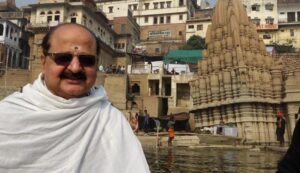

<?xml version="1.0" encoding="UTF-8"?><rss version="2.0"
	xmlns:content="http://purl.org/rss/1.0/modules/content/"
	xmlns:wfw="http://wellformedweb.org/CommentAPI/"
	xmlns:dc="http://purl.org/dc/elements/1.1/"
	xmlns:atom="http://www.w3.org/2005/Atom"
	xmlns:sy="http://purl.org/rss/1.0/modules/syndication/"
	xmlns:slash="http://purl.org/rss/1.0/modules/slash/"
	>

<channel>
	<title>Manikarnika &#8211; Varanasi Temples</title>
	<atom:link href="index.html" rel="self" type="application/rss+xml" />
	<link>../../../../../index.html</link>
	<description>Temples of Varanasi as referred to in Kashi Khand</description>
	<lastBuildDate>Thu, 19 Jun 2025 05:16:46 +0000</lastBuildDate>
	<language>en-US</language>
	<sy:updatePeriod>hourly</sy:updatePeriod>
	<sy:updateFrequency>1</sy:updateFrequency>
	<generator>https://wordpress.org/?v=4.6.29</generator>
	<item>
		<title>MANIKARNIKA</title>
		<link>../../../../../importance-of-river-ganga/manikarnika/index.html</link>
		<pubDate>Wed, 12 May 2010 16:24:27 +0000</pubDate>
		<dc:creator><![CDATA[admin]]></dc:creator>
				<category><![CDATA[Importance of River Ganga]]></category>
		<category><![CDATA[Important Teerths/Ghats]]></category>
		<category><![CDATA[Manikarnika]]></category>
		<category><![CDATA[adi keshav]]></category>
		<category><![CDATA[lakshmi kund]]></category>
		<category><![CDATA[mani]]></category>
		<category><![CDATA[manikarnika]]></category>
		<category><![CDATA[manikarnika ghat]]></category>
		<category><![CDATA[manikarnika river]]></category>
		<category><![CDATA[manikarnika templ]]></category>
		<category><![CDATA[manikarnikeshwar]]></category>

		<guid isPermaLink="false">../../../../../p=715.html</guid>
		<description><![CDATA[According to Kashi Khand, Chapter 26, at the time of Maha Pralay (deluge) there was absolute destruction every where and darkness prevailed all over.  There was no direction anywhere, no one to speak, cry or listen. At that time the ever pervading Brahm existed and the omnipotent Lord Almighty Shiva manifested himself alongwith Goddess in [&#8230;]]]></description>
				<content:encoded><![CDATA[<p>According to Kashi Khand, Chapter 26, at the time of Maha Pralay (deluge) there was absolute destruction every where and darkness prevailed all over.  There was no direction anywhere, no one to speak, cry or listen.</p>
<p>At that time the ever pervading Brahm existed and the omnipotent Lord Almighty Shiva manifested himself alongwith Goddess in the form of Shakti. Lord Shiva addressed himself as Purush and Goddess as Shakti Roopee stree (feminine embodiment of energy).  As far as land is concerned, only the area representing Pancha Krosha Kshetra existed.  (Pancha Krosha means five Krosha, again Krosha is a measurement of distance which is approximately equal to 2 miles).  Taking a mid point, a radius of 10 miles was the Pancha Krosha Kshetra.</p>
<p>Even during the worst time of deluge, Lord Shiva and Goddess Parvaty did not leave this place (Pancha Krosha Kshetra), therefore this place is known as Avi Mukta Kshetra.  Lord Shiva desired that every one in the Kshetra (region or area) should be happy and the place was called as Ananda Kanan (Anandavan).</p>
<p>Lord Shiva cast a soft and affectionate glance to his left side wherefrom a handsome man appeared.  Since this person qualified as Uttama Purush, he was known as Purushottam.  Lord Shiva was glad and he proclaimed that Purushottam was none other than Maha Vishnu.  Lord Shiva and Lord Vishnu entered Anand Van where Lord Vishnu immediately engaged himself in intense prayers.</p>
<p>With his Sudarshan Chakra, Lord Vishnu dug a huge Pond and filled it with his divine perspiration.  This Kund came to be known as Chakrapushkarini Teerth.  Lord Vishnu was deeply engrossed in his prayers and Lord Shiva was moved by the former’s sincerity.  He requested Lord Vishnu to get up and ask for divine boon.  Lord Vishnu desired that both Lord Shiva and Goddess Parvaty should always be available to accept his (Lord Vishnu’s) prayers.  Lord Shiva’s jewel from the ear tops fell in the Chakrapushkarini Teerth and then onwards the  Pond came to be called Manikarnika (jewel is referred to as Mani and Karnika means ear).</p>
<p></p>
<p style="text-align: center;">Manikarnika Ghat</p>
<p>Lord Vishnu further stated that the entire area is shining with a bright divine light with great radiance and, therefore, this Kshetra (region) will be called as “Kashi”.  (Even now Kashi is referred to as City of Light).</p>
<p><strong>&#8212;&#8212;&#8212;&#8212;&#8212;&#8212;&#8212;&#8212;&#8212;&#8212;&#8212;&#8212;&#8212;&#8212;&#8212;&#8212;&#8212;&#8212;&#8212;&#8212;&#8212;&#8212;&#8212;&#8212;&#8212;&#8212;&#8212;&#8212;&#8212;&#8212;&#8212;&#8212;&#8212;&#8212;-</strong></p>
<p><strong>Kashi Khand, Chapter 26, Shlok 117</strong></p>
<p>&nbsp;</p>
<p><strong>सर्वतीर्थेषु संस्नानाद्यत्पुण्यं समवाप्यते</strong></p>
<p><strong>तत्पुण्यमाप्यते सम्यङ्ग मणिकर्णयेकमज्जनात् </strong></p>
<p>&nbsp;</p>
<p><strong>The aggregate punya accruing out of bathing in all Teerths in the world, will be obtained by taking one dip in Manikarnika in Kashi, with all divinity.</strong></p>
<p><strong>&#8212;&#8212;&#8212;&#8212;&#8212;&#8212;&#8212;&#8212;&#8212;&#8212;&#8212;&#8212;&#8212;&#8212;&#8212;&#8212;&#8212;&#8212;&#8212;&#8212;&#8212;&#8212;&#8212;&#8212;&#8212;&#8212;&#8212;&#8212;&#8212;&#8212;&#8212;&#8212;&#8212;&#8212;&#8212;</strong></p>
<p>A devotee who religiously takes bath in Manikarnika will attain Moksha and there is absolutely no doubt about it.</p>
<p>&nbsp;</p>
<p><strong>Please watch our YouTube Videos on Manikarnika Teerth in the below Link :</strong></p>
<p>&nbsp;</p>
<p><a href="https://www.youtube.com/watch?v=GjYa_ntAvtQ&amp;t=15s">https://www.youtube.com/watch?v=GjYa_ntAvtQ&amp;t=15s</a></p>
<p>&nbsp;</p>
<p>A devotee who takes holy dip in Manikarnika with all devotion, performs rituals for his forefathers and offers prayers to the Almighty will derive the benefits of performing various Yagyas.</p>
<p>&nbsp;</p>
<p><strong>&#8212;&#8212;&#8212;&#8212;&#8212;&#8212;&#8212;&#8212;&#8212;&#8212;&#8212;&#8212;&#8212;&#8212;&#8212;&#8212;&#8212;&#8212;&#8212;&#8212;&#8212;&#8212;&#8212;&#8212;&#8212;&#8212;&#8212;&#8212;&#8212;&#8212;&#8212;&#8212;&#8212;&#8212;-</strong></p>
<p><strong>Kashi Khand, Chapter 34, Shlok 33</strong></p>
<p><strong>तर्पिता: पितरो येन सम्प्राप्य मणिकर्णिकाम्</strong></p>
<p><strong>सप्त सप्त तथा सप्त पूर्वजास्तेन तारिता: </strong></p>
<p>&nbsp;</p>
<p><strong>A devotee who goes to Manikarnika  and performs Pitru Tarpan,  gives salvation to seven generations before him and seven generations after him, including his family.</strong></p>
<p><strong>&#8212;&#8212;&#8212;&#8212;&#8212;&#8212;&#8212;&#8212;&#8212;&#8212;&#8212;&#8212;&#8212;&#8212;&#8212;&#8212;&#8212;&#8212;&#8212;&#8212;&#8212;&#8212;&#8212;&#8212;&#8212;&#8212;&#8212;&#8212;&#8212;&#8212;&#8212;&#8212;&#8212;&#8212;&#8212;</strong></p>
<p>Lord Vishnu describes various important Teerths in Kashi Khand, Chapter 61.  All the sacred teerths (sacred waters) come to Manikarnika during the noon time for taking bath.  While all sacred teerths are capable of cleansing the sins, Manikarnika Teerth tops them all. All those sacred teerths derive their strength from Manikarnika Teerth.</p>
<p>Lord Shiva and Goddess Parvaty themselves come to Manikarnika during noon for taking bath. Lord Vishnu himself comes to Manikarnika during the above time alongwith Goddess Lakshmi from Vaikunth to take bath.  According to Lord Vishnu, Lord Brahma also visits Manikarnika at the above time for his bath. Therefore, Maadhyannika Snanam (Bath at noon) at Manikarnika is considered very auspicious and this is a part and parcel of Kashi Yatra being performed by South Indians.</p>
<p>Not only the above Lords, but Lord Indra, other Devas as also great Nag Rajas (Serpent Kings) like  Vasuki etc. visit Manikarnika during noon for their holy bath.</p>
<p><strong>&#8212;&#8212;&#8212;&#8212;&#8212;&#8212;&#8212;&#8212;&#8212;&#8212;&#8212;&#8212;&#8212;&#8212;&#8212;&#8212;&#8212;&#8212;&#8212;&#8212;&#8212;&#8212;&#8212;&#8212;&#8212;&#8212;&#8212;&#8212;&#8212;&#8212;&#8212;&#8212;&#8212;&#8212;-</strong></p>
<p><strong>Kashi Khand, Chapter 61, Shlok 69</strong></p>
<p><strong>जप्त्वैकामपि गायत्रीं सम्प्राप्य मणिकर्णिकाम्</strong></p>
<p><strong>लभेदयुतगायत्रीजपनस्य फलं स्फुटं</strong></p>
<p>&nbsp;</p>
<p><strong>Reciting one Gayatri in Manikarnika (in Kashi) will yield punya benefits of reciting 10,000 gayatris.</strong></p>
<p><strong>&#8212;&#8212;&#8212;&#8212;&#8212;&#8212;&#8212;&#8212;&#8212;&#8212;&#8212;&#8212;&#8212;&#8212;&#8212;&#8212;&#8212;&#8212;&#8212;&#8212;&#8212;&#8212;&#8212;&#8212;&#8212;&#8212;&#8212;&#8212;&#8212;&#8212;&#8212;&#8212;&#8212;&#8212;&#8212;</strong></p>
<p>As per the above shloka, a devotee who chants one Gayatri Mantra at Manikarnika gets the benefit of chanting ten thousand Gayatri Mantras at other places.  A devotee who performs Homam with one Ahuti at Manikarnika gets the benefit of performing Agnihotra Homam for the entire life.  (Agnihotra Homam is performed only by those great Pundits who have performed great Yagam called Soma Yagam).</p>
<p>Lord Vishnu has described the boundary of Manikarnika Kshetra: In the south the area extends upto Ganga Keshav (presently Lalita Ghat), in the north Harishchandra Mandap (roughly near Sankata Ghat), River Ganga to the east and Swarga Dwari to the west (Brahmanal Chauraha – cross road). According to Lord Vishnu, devotees who take bath in Manikarnika and worship Manikarnikeshwar will not see mother’s womb again (meaning – there will be no rebirth).</p>
<p>&nbsp;</p>
<p><strong>&#8212;&#8212;&#8212;&#8212;&#8212;&#8212;&#8212;&#8212;&#8212;&#8212;&#8212;&#8212;&#8212;&#8212;&#8212;&#8212;&#8212;&#8212;&#8212;&#8212;&#8212;&#8212;&#8212;&#8212;&#8212;&#8212;&#8212;&#8212;&#8212;&#8212;&#8212;&#8212;&#8212;&#8212;-</strong></p>
<p><strong> </strong></p>
<p><strong>Kashi Khand, Chapter 35, Shlok 117</strong></p>
<p><strong> </strong></p>
<p><strong>दत्वा दानान्यनेकानि विगाह्य मणिकर्णिकाम्</strong></p>
<p><strong>स्वर्गद्वारं प्रविष्टा ये न ते निरयगामिन:</strong></p>
<p>&nbsp;</p>
<p><strong>Those who enter the swargdwaar area after taking bath and giving donations in Manikarnika, will never go to hell. </strong></p>
<p><strong> </strong></p>
<p><strong>&#8212;&#8212;&#8212;&#8212;&#8212;&#8212;&#8212;&#8212;&#8212;&#8212;&#8212;&#8212;&#8212;&#8212;&#8212;&#8212;&#8212;&#8212;&#8212;&#8212;&#8212;&#8212;&#8212;&#8212;&#8212;&#8212;&#8212;&#8212;&#8212;&#8212;&#8212;&#8212;&#8212;&#8212;&#8212;</strong></p>
<p>&nbsp;</p>
<p>Presently Manikarnika Ghat is practically a cremation ground.  However, if a devotee proceeds in a boat slightly towards the north (towards Panch Ganga), he will reach Chakrapushkarini Kund.  Since the Manikarnika area is quite vast (as described in the previous para), devotees take bath in the river adjacent to Chakrapushkarini Kund.  There is an inscription near the above Kund(courtesy Distt. Administration) which gives a brief history of Lord Vishnu’s association  with Chakrapushkarini Kund.</p>
<p>Kashi Khand, Chapter 33, mentions that Raja Harishchandra (who was known for his truthfulness) sold himself at this place to safeguard upholding his ideals.</p>
]]></content:encoded>
			</item>
	</channel>
</rss>
